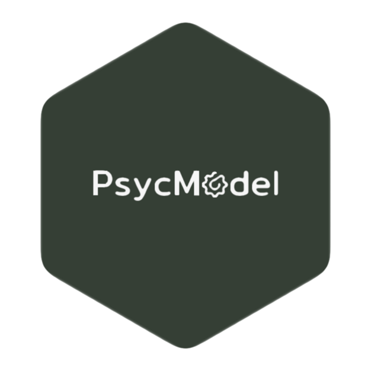

psycModel 
Installation
CRAN Stable Version
# Install the standard version
install.packages('psycModel')
# Install all of the suggested dependencies for full functionality
install.packages('psycModel',dependencies = c("Depends", "Imports","Suggests")) Dev Version (newest feature)
devtools::install_github('jasonmoy28/psycModel')Key Features
✓ A beginner-friendly R package for statistical analysis in social science (intermediate & advanced R users should also find it useful)
✓ Tired of manually writing all variables in a model? You can use dplyr::select() syntax for all models
✓ Produce publication-ready tables and figures (e.g., descriptive table)
✓ Fitting models, plotting, checking goodness of fit, and model assumption violations all in one place.
✓ Beautiful and easy-to-read output. Check out this example now.
Supported Models
Regression models:
* Linear regression (i.e., support ANOVA, ANCOVA) & curvilinear regression
* Linear mixed effect model (i.e., HLM, MLM).
Structure Equation Modeling:
* Exploratory & confirmatory factor analysis
* Measurement invariance (MGCFA approach)
* Mediation analysis (SEM approach)
Other:
* Descriptive statistics
* Correlation
* Reliability analysis
Note: If you like this package, please considering give it a star. I would really appreciate that. If you experience any problem, please feel free to open a new issue here
Credit
Authors: Jason Moy
Citation: Moy, J. H. (2021). psycModel: Integrated Toolkit for Psychological Analysis and Modeling in R. CRAN. https://cran.r-project.org/package=psycModel.
Logo Design: Danlin Liu
Disclaimer:
The current release is the alpha version of the package since I plan to add more features and support more models in the future (read more about planned updates here). If you are interested in help building this package, please feel free to submit a pull request / GitHub issue. Although I tried my best to fix any bugs, the package is not guarantee to be bug-free. If you find any bugs, please submit them in the GitHub issue. This package is licensed under the GPLv3 liscense. You may use, re-distribute, and modified the package. Additionally, this package does provide any kind of warranty, either expressed or implied based on the GPLv3 liscense. Finally, you should expect many changes that are not backward compatible until the package’s first major release (i.e., v1.0.0).